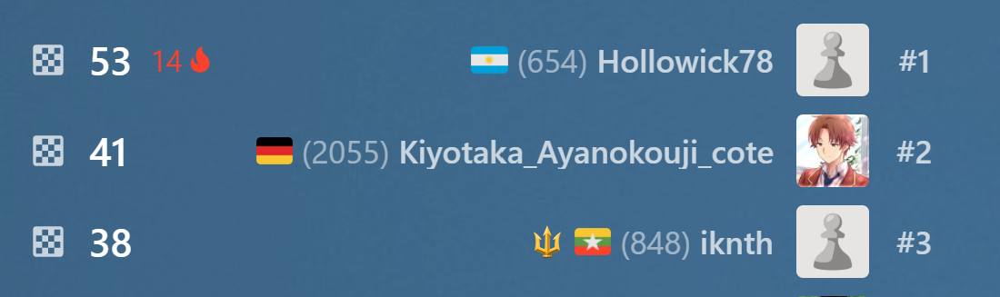
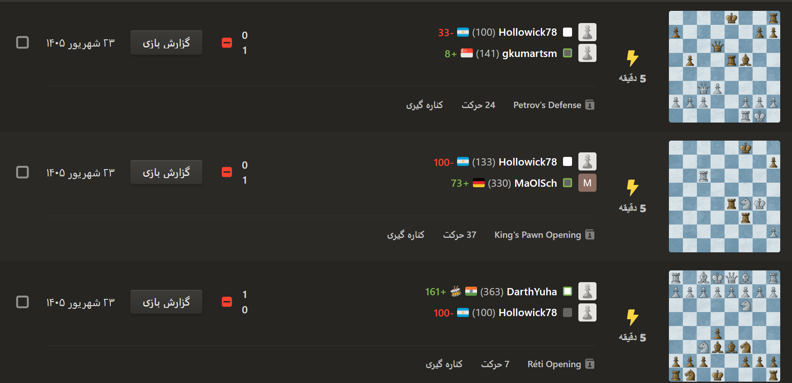
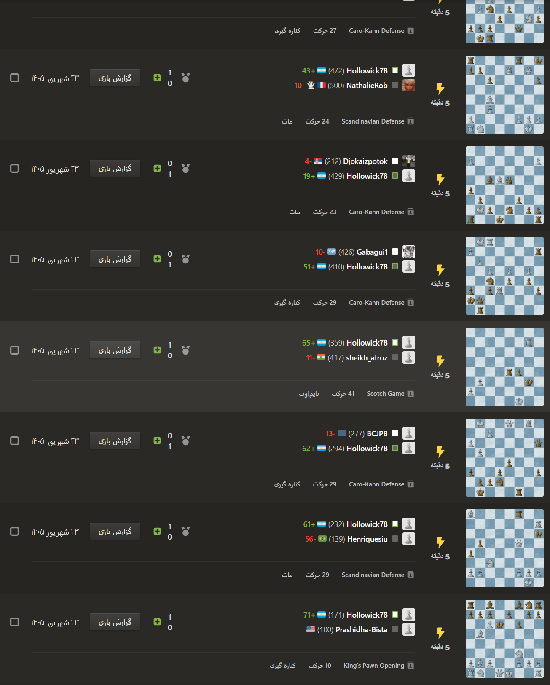

Honesty Rating
In 14 September I participated in the Blitz 5 min Tournament and I saw a person in 1st with 600 rating!
Some players made a new account and came to the Tournament. They lose their 3 first games and they lose their rating but why? Because if their rating comes down they play with weak players and got points.
Leaderboard

A person with 600 rating in 1st place
Lose 3 games

He intentionally lost the first 3 games to lower his rating
Win 14 games one by one

Play and win against weak players
Conclusion
It is not fair, and I solicit chess.com's staff to solve this problem. Thank u soo much :)